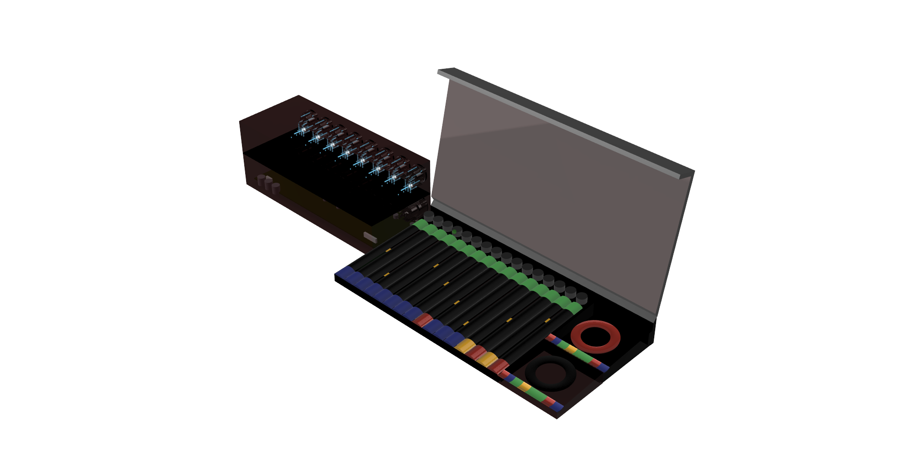

GIG Rig
Each musician's doorway into the system.
Rig is the personal endpoint for GIG: instrument or microphone input, IEM mix, talkback, playback, patches, sheet music, and session control in one connected unit.
Input
Instrument or microphone entry into the shared GIG session.
Monitoring
Personal IEM/headphone mix, talkback, and cue control for each player.
Playback
Reference tracks, rehearsal material, and session playback stay close to the musician.
Session Tools
Patches, sheet music, status, and controls travel with the player.
01 Plug InThe musician connects instrument, mic, ears, and session tools.
02 JoinRigs connect into the shared band session over the network.
03 PlayEach player controls their own monitoring while staying in the same system.
04 Carry ForwardThe same Rig language follows rehearsal, recording, playback, and live use.